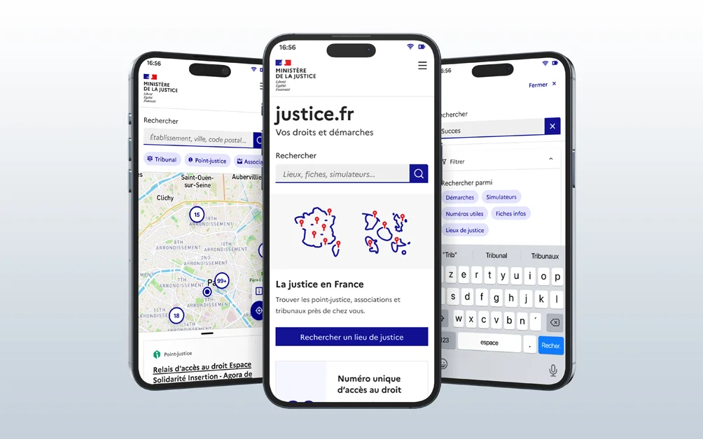

Contributing to design and user research for the Justice.fr app

Client context: The Ministry of Justice was designing a mobile app called "justice.fr" to help people better understand the justice system and access its services more easily and quickly.
My role: I joined the project as a Senior UX Designer, alongside an existing squad that already had an experienced designer. The goal was to make sure we delivered polished, clear, and complete work.
How we worked: We held daily stand-ups with the project lead, the product team, the design team and the tech team, and occasionally, when needed, someone from the business team. Depending on sprint length (which varied), we also ran retrospectives to see what was working and what wasn't.
For now, this project's deliverables can only be shown during a meeting or interview.
Approach
Part 1: Improving the existing work
- • The other designer started by handing me everything he'd begun — Figma files and test protocols alike — most of which I had to fix, either for typos or because they lacked user insights.
- • We ran more co-design workshops and refined the roadmap so we could deliver the different options progressively, while accounting for the fact that some tools would need to be integrated later due to ongoing development.
- • The prototype was only slightly modified for the first version, so developers could start working, but a new version was later created to fix some usability issues and add the main features.
Part 2: Preparing for user testing
- • Once the prototype was approved by all stakeholders (product team, business teams, managers, tech and design teams), the other designer and I put together two test protocols: one for participants without disabilities and one for participants with disabilities. We validated both together, first through co-design workshops to address every stakeholder's questions, then with an overall presentation of both prototypes.
- • At the same time, to show senior stakeholders where the project stood, I reworked some existing presentation materials that my manager felt were too technical.
Part 3: User testing, field research and debriefs
- • I ran several in-person user tests with people working in the justice system who were in contact with the public, since members of the public themselves were hard to reach given the nature of this user group.
- • I also had the chance to run a test with a blind user, which highlighted the difference between an experience "designed with accessibility in mind" and one that truly meets the needs of people with disabilities.
- • I also had the opportunity, together with the PO and someone from the business team, to visit a local legal information center (Point-justice) to gather more insights on the different parts of the app.
- • Once all the tests were done, we held a debrief with all stakeholders to decide which insights to keep and what was feasible to act on.
- • Compared our findings with quantitative tests run by UserTesting.
Part 4: Development support and internal RAAM audit
- • With mockups validated and corrected, it was time to deliver the two remaining parts of this version (while, of course, already starting to think about what came next)
- • Constant follow-up with developers, whether through Figma comments or messages/calls depending on everyone's availability, to answer questions quickly and efficiently.
- • Learned and used the RAAM framework (the mobile-app equivalent of RGAA) to run an internal pre-audit of the app's accessibility before commissioning an external audit.
Deliverables:
- • Figma file: A structured file with several prototype versions, allowing developers to integrate them progressively.
- • Test protocols: 2 clear, repeatable protocols validated by all stakeholders (including one specific to accessibility).
- • RAAM audit (Excel): A comprehensive pre-audit that helped identify and fix numerous accessibility issues before the external audit, particularly around the app's navigation.
- • PowerPoint presentations: 2 tailored decks: one for senior management (non-technical, progress-focused, mainly covering user test results), and one for the project's next steps and other work outside the app's scope (existing UX tools).
Results & Impact:
Among the findings from the test with a blind participant, one example concerned the reading order: the screen reader read all the headings first, then all the descriptions, then all the links, separating information belonging to the same piece of content.
The reading order was corrected to follow each piece of content: heading → description → link. I then verified this correction during my internal accessibility audits.
- • An accessibility score of 90.24%, recorded around the end of my assignment in September 2023. My contribution to this collective result included the test with a blind participant, internal audits, and following up on fixes with developers.
- • A user rating of 4.2/5 (App Store) and 4/5 (Play Store)
- • A satisfied, self-sufficient team: the deliverables and processes we set up allowed for a smooth transition after my assignment ended
The Justice.fr app is now live with:
What I learned:
- • Working with a fully remote squad, and the technical constraints that come with it
- • Learning to use the RAAM framework, as well as writing a user test protocol and facilitating the test for people with disabilities
- • Mentoring a more junior designer on a project and correcting deliverables to meet the quality expected by managers
- • Running in-person user tests (I had previously only done them remotely)
Have a project in mind? Need help?
Let's talk.
If you're interested in working with me or would like to talk, I'd be happy to hear from you — via LinkedIn (new tab), or directly by email at benech.r(@)gmail.com. I look forward to hearing from you!
To return to the homepage, head this way!